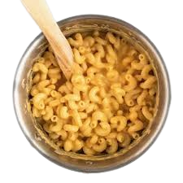

- 2 cups elbow macaroni
- 2 cups milk
- 2 tablespoons butter
- 2 tablespoons flour
- 2 cups shredded cheddar cheese
- Salt & pepper
-
- Cook macaroni in salted water according to package instructions. Drain and set aside.
- In a saucepan, melt butter over medium heat. Stir in flour and cook for 1 minute to form a roux.
- Gradually whisk in milk until smooth and thickened, about 5 minutes.
- Remove from heat and stir in cheese until melted and creamy. Season with salt and pepper to taste.
- For extra flavor, add a pinch of paprika or mustard powder to the cheese sauce if desired.
-
- Add cooked macaroni to the cheese sauce. Stir until well coated and creamy.
- If you like a baked version, transfer to a baking dish, top with breadcrumbs, and broil until golden.
-
- Spoon macaroni into bowls and serve hot.
- Enjoy immediately for the best creamy texture.
- Leftovers can be refrigerated and reheated with a splash of milk to restore creaminess.